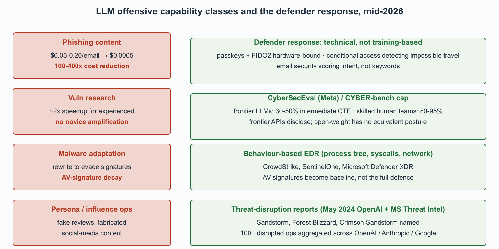

"Red-team LLM use cases: phishing copy, vulnerability research, malware adaptation. The asymmetry of LLM offense and defense is the whole chapter in one sentence."
Guard, Red-Team-Realist AI Agent
Attackers use the same generation, summarization, and code-completion capabilities defenders use, with one critical difference: there is no compliance team slowing them down. This section catalogs what attackers do with LLMs because defenders must understand the threat to defend against it. The section is calibrated to publicly-known capabilities; it does not extend what is already accessible to motivated adversaries. Three capability classes have stabilized as the dominant offensive uses: phishing content generation, vulnerability research acceleration, and malware adaptation. Each comes with a defender-facing response pattern.

Prerequisites
This section assumes the defensive LLM use cases from Section 71.1, the LLM-safety framing from Section 49.1, and the jailbreaking vocabulary from Section 48.1.
The capabilities below have offensive analogs to the defender use cases in Section 71.1. We cover them because defenders must understand attacker capabilities; we do not cover techniques that would substantially extend attacker capability beyond what is already public.
Phishing Content Generation
CyberSecEval, Meta's open-source benchmark for measuring LLM offensive capability, was released in late 2023 as part of the Purple Llama project. The benchmark's "exploit generation" sub-test was so contentious that Meta reportedly spent 4 months working with U.S. government cybersecurity reviewers before releasing it; the eventual public release included a quietly redacted appendix listing the specific test categories that were withheld from the publicly downloadable evaluation set.
LLMs generate plausible spear-phishing emails at scale, in any target language, with realistic context drawn from public sources. The pre-LLM phishing landscape was constrained by attacker writing quality, particularly in languages the attacker did not speak natively; the LLM era removed that constraint. Attackers can now produce well-written, contextually-aware spear-phishing in any language at near-zero marginal cost.
The blue-team mitigation is to assume your users will see well-crafted phishing and invest accordingly in MFA, conditional access, and detection rather than user-training-as-only-defense. The defenses that scale are technical: passkeys and FIDO2 hardware-bound credentials, conditional-access policies that detect impossible travel and anomalous device fingerprints, and email security that scores message intent (not just keywords). The defenses that do not scale are pure user training; users will be tricked some fraction of the time, and the architecture must remain safe through that fraction.
Vulnerability Research Acceleration
LLMs accelerate fuzz-input generation, exploit-development scaffolding, and understanding-of-unfamiliar-codebases for attackers. Red teams use these openly; criminal actors do too. Public benchmarks (CyberSecEval, CYBER-bench) measure capability; the consensus is that frontier LLMs assist with but do not autonomously perform competent vulnerability research. The 2024 to 2025 evaluations of frontier models on standardized exploitation benchmarks consistently show that LLMs accelerate experienced researchers (by perhaps 2x) but do not enable novice attackers to perform research they could not otherwise perform.
Anthropic, OpenAI, and Google have all published responsible-disclosure programs for the capabilities they catch their frontier models supporting; the OpenAI disrupting deceptive uses reports and Anthropic's policy papers are the standard reference. The defender implication is that frontier model providers cooperate with the security community on disclosure, while open-weight models do not have an equivalent cooperative posture and are increasingly the substrate for adversarial use.
Malware Adaptation
LLMs can rewrite malware code to evade signature-based detection. Defensive implication: signature-based detection has been declining in value for years; this accelerates the trend toward behavior-based and ML-based detection. The architectural response: invest in EDR products that detect behavior (process tree anomalies, syscall patterns, unusual network connections) rather than file-hash matches, and accept that AV signatures provide a useful baseline rather than a complete defense.
Persona Generation and Influence Operations
A fourth category that does not fit cleanly into the traditional pen-test taxonomy: LLM-generated personas, fake reviews, fabricated social-media content, and the broader category of influence operations. Frontier model providers report disrupting state-affiliated and commercial actors using their APIs for these purposes; the OpenAI and Anthropic threat-disruption reports are the canonical sources. The cybersecurity overlap is the social-engineering vector: LLM-generated personas have been used in pretext-based attacks on targeted individuals, and the SOC must be able to investigate "is this person who they say they are?" questions when they arise.
What Defenders Can Do
The pattern that has emerged across mature security organizations in 2026 has three elements. First, raise the cost of the highest-volume attack categories (phishing, credential stuffing, account takeover) through technical controls that do not depend on user vigilance. Second, instrument the environment heavily enough that the LLM-assisted defender can investigate quickly when an attack does land. Third, maintain a relationship with the frontier-model providers' trust-and-safety teams; the cooperative disclosure of attacker patterns has been one of the unexpectedly valuable side effects of the LLM era.
The capability asymmetry between attackers and defenders has not changed much under LLMs. Attackers got faster at the volume-heavy parts of their work (phishing content, malware variants); defenders got faster at the volume-heavy parts of their work (alert triage, postmortems, detection authoring). The ratio of attacker capability to defender capability is broadly similar to the pre-LLM era. What has changed is that both sides operate at higher velocity; the marginal cost of marginally better attacks and the marginal cost of marginally better defenses have both collapsed. Organizations that fail to adopt the defender LLM tools fall behind faster, not because attackers gained capability but because the defender capacity required to operate at the new velocity exceeds the unaugmented human equivalent.
Who. OpenAI's Trust and Safety team, with cooperation from Microsoft Threat Intelligence and the broader security community. Situation. Through 2024-2025, OpenAI published a recurring series of disrupting-deceptive-uses reports documenting state-affiliated and commercial actors who used the API for covert influence operations, social engineering, and other adversarial purposes. Problem. Frontier-model providers face a structural dilemma: the same generative capabilities that produce productivity gains for defenders also produce phishing content, fake-persona scaffolding, and influence-operation copy for attackers. Banning users individually is reactive; the question is whether systematic disruption is possible. Decision. OpenAI built an internal threat-detection capability (combining behavioral signals, content classifiers, and human review) and committed to publishing periodic threat-disruption reports. How. Identified accounts are banned; observed tradecraft is documented and shared with the broader security community; the threat-disruption reports name the threat actors when possible (e.g., Sandstorm, Forest Blizzard, Crimson Sandstorm in the May 2024 report co-published with Microsoft) and describe the patterns of misuse without providing operational details that would help adversaries. Result. By late 2025, the OpenAI, Anthropic, and Google threat-disruption reports collectively document over 100 disrupted operations and produce a quasi-public threat-intelligence feed of LLM-enabled adversary tradecraft. Lesson. Frontier-model providers can disrupt adversarial use at the API layer, but the disruption is structurally weaker for open-weight models where no provider has visibility into the inference pipeline. The defender implication: the security community now has a partial map of LLM-enabled adversary behavior, but the map is biased toward frontier-API usage.
The most-cited benchmark on offensive LLM capability is Meta's CyberSecEval and its successors, plus the academic CYBER-bench. Two numbers anchor the discussion. First, frontier models show roughly 2x speedup for experienced security researchers on standardized exploitation tasks, with no evidence that they enable novice attackers to perform research they could not otherwise perform. Second, the capture-the-flag (CTF) competition baseline: top frontier models in 2025 solved roughly 30-50 percent of intermediate-difficulty CTF challenges (CyberSecEval-v2 numbers), against 80-95 percent for skilled human teams. The gap is closing but the cap on novice-amplification has held through 2026.
Phishing economics. Pre-LLM, large-scale phishing required either careful translation budgets (~$0.05-0.20/email for human translation in target languages) or accepted lower yield from poorly-written content. LLM generation drops the marginal cost to ~$0.0005/email at frontier-API pricing, a 100-400x reduction. The defensive implication is that phishing volume scales without proportional cost, but the marginal effectiveness improvement is smaller: users still click on roughly the same fraction of well-crafted phishing emails, and the technical defenses (passkeys, MFA, anomaly detection) remain the dominant mitigation regardless of email quality. The architecture-not-training defense holds.
- Chapter 47 (Adversarial Security and Red Team) for the offensive-testing methodology that produces CyberSecEval-style numbers.
- Chapter 48 (LLM Misuse) for the broader catalog of malicious-use categories.
- Chapter 49 (Agent Safety) for the agent-specific attack surface that compounds the basic LLM risks.
- Section 71.3 (LLM-Specific Attack Surface) for the OWASP Top 10 and MITRE ATLAS canon that operationalizes defender response.
- Section 71.4 (Trust Boundaries) for the five-layer architecture that defenders use to constrain offensive-tradecraft success.
Show Answer
Show Answer
Show Answer
What Comes Next
Section 71.3 turns to the LLM-specific attack surface: prompt injection, training-data poisoning, membership inference, model extraction. The defender's LLM stack is itself a target, and the OWASP Top 10 for LLM Applications and MITRE ATLAS are the canonical references.
What's Next?
In the next section, Section 71.3: LLM-Specific Attack Surface, we build on the material covered here.